- 00000018WIA30761F20GYZ
- id_131075831.2
- Jul 5, 2019 11:18:59 PM
Cardiac Phased Array Coil for HDe 1.5T
INTRODUCTION
This is a service manual for the Cardiac Coils for 1.5T
HOW THE CARDIAC PHASED ARRAY COIL OPERATES
This coil consists of four loops. An anterior portion contains two critically overlapped loops, while a posterior portion contains another two critically overlapped loops. The primary application is the imaging of the heart and great vessels. See Figure 1.
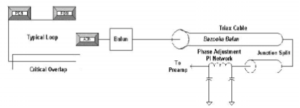
The Cardiac multicoil is a four loop array to obtain the higher SNR of smaller MRI surface coils and retain a large field of view. Also, because the array is split in two halves (one in the front and one in the back) there is a "volume" affect that increases the SNR at the center of the body. Each half consists of two individual loops that are approximately 7.5 inches (19 cm) by 4.5 inches (11.5 cm) with a 0.75 inch (2 cm) overlap. This translates to a coil area of approximately 8.3 inches (21 cm R/L) by 7.5 inches (19 cm S/I) overall for each half.
The array is intended to be used in one mode only utilizing all four coils. This connection plugs into the interface to Signa HDe is a Hypertronics connector and is keyed for a specific field strength use only. The two halves are connected to each other via Cabling.
The array is designed for feet first cardiac imaging. This implies a cable length of approximately 85 inches (216 cm)
The only active components, including the PIN diodes, are on the input boards via an access cover over the input circuitry of the coil. The PIN diodes may be replaced in the Field.
Each coil loop must be turned off during transmit. This is accomplished with active blocking which includes a tuned L-C network and a single PIN diode per coil element. The input capacitor is chosen such that the transmit blocking impedance (at 250 mA DC bias to the diode) is greater than 1K ohm. The coil loop size is 7.5 inches (19.1 cm) X 4.5 inches (11.4 cm) which is 34 in*in (218 cm*cm).
The input capacitor is chosen for both matching and blocking circuitry. The blocking circuitry and matching circuit reside on the Cardiac Phased Array Input Board.
In addition to the active blocking components there are two passive decoupling networks, PDN, for each loop. These PDN provide both heat distribution for UFI pulse sequence compatibility as well as maintaining the coils safe in a first fault condition should the active network fail to operate properly. The PDN are not serviceable by Field personnel.
A shielded resonant cable trap on each loop minimizes the ground currents on the shield due to its high impedance.
A 50 ohm phase shift network ensures a multiple of a half wavelength from the Hypertronics connector to the coil input. This phase compensation network takes into account cable lengths and the balun circuit. The phase shift networks for all four loops reside on the Cardiac Phase Adjust Board located in the Quick Disconnect Enclosure which is sealed.
COMPATIBILITY
The Cardiac Phased Array Coil is compatible with the following hardware configurations:
-
Signa HDe 1.5T System
| Warning | |
|---|---|
ORGANIZATION OF THIS DOCUMENT
This manual is divided into the following sections:
-
Introduction, describes how the Cardiac Phased Array Coil operates and when and where the Cardiac Phased Array Coil can be used.
-
Setup and Calibration, describes installation procedures.
-
Functional Checks, describes the normal power-up sequence.
-
Replacement / Maintenance, describes field maintenance procedures.
-
Renewal Parts, lists field replaceable parts
ENVIRONMENTAL REQUIREMENTS
Operate and store the Cardiac Phased Array Coil in the Scanner Room.
SETUP AND CALIBRATION
CHECKING THE SHIPPING LIST - PRELIMINARY
Table 2-1 lists the M3335SC 1.5T HD 4CH Cardiac Array Coil parts. Check that all parts have been shipped.
| ITEM | Part Number | QTY |
| 1.5T, 4CH CARDIAC ARRAY ,HDe | 5154685 | 1 |
| Operator Manual | 2200460-148 | 1 |
| Coil Positioning Strap | 2211425 | 2 |
| Pad - Foot End | 2213746 | 1 |
| Pad - Coil End | 2208990 | 1 |
INSTALLING THE CARDIAC PHASED ARRAY COIL
This key will be used by the operator to select CARDIAC (elements 1-4) imaging. Name the key "CARDIAC". See Illustration 2- 1.
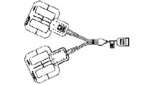
FUNCTIONAL CHECKS
-
Perform a Body coil scan SNR verification. Refer to Section 3-1, BODY COIL SNR VERIFICATION.
-
Perform a Cardiac Phased Array Coil SNR Verification. Refer to Section 3-2, CARDIAC PHASED ARRAY COIL SNR VERIFICATION.
PERIODIC QUALITY ASSURANCE CHECK
On a periodic basis, such as during planned maintenance, perform the quality assurance checks outlined below to ensure that the coil is operating properly:
-
Check the external cable and coil foam for cracks or breaks once a week. Refer to Section 4-5, CHECKING THE CABLES.
-
Perform a coil SNR verification. Refer to Section 3-2, CARDIAC ARRAY COIL SNR VERIFICATION.
-
Record the date and value calculated in Section 3-3, SNR IMAGE ANALYSIS in column 2 under "SNR Data QA Check" of the Data Table as is instructed.
-
As is instructed in the Data Table, divide the SNR value obtained in the periodic QA check by the original SNR value and record in column 6 of the Data Table.
-
If this ratio is not greater than 85%, then there may be a problem in the coil system. Contact your local GE Service Representative.
FUNCTIONAL CHECKS
BODY COIL SNR VERIFICATION
An alternate proprietary procedure is available for GE use and to customers with a valid Advanced Service Package Limited License. Refer to "TLT PROCEDURE" located on appropriate proprietary Service Methods CD-ROM, navigate to System:Troubleshooting.
Phantom Required: SPT Short Loader, 2125244
Phantom Setup Procedure
THE QUAD HEAD COIL MUST BE COMPLETELY REMOVED FROM THE CRADLE BEFORE PERFORMING ANY BODY SCANS. FAILURE TO DO THIS MAY RESULT IN DAMAGE TO THE HEAD COIL T/R NETWORK.
-
Remove Quad Head Coil (if present) from cradle.
-
Select [New Exam] to allow a new Landmark to be set.
-
Position the Body Phantom in the center of the Body Loader at the center of the cradle. Landmark the center of the phantom and advance to isocenter using the [ADVANCE TO SCAN] button. See Figure 3.
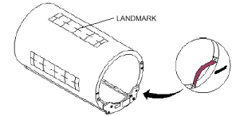
Scan
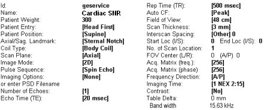
-
Setup Scan Prescription as shown in Figure 4.
-
Select [Auto Prescan] to properly calibrate the RF power level for the 90 degree and 180 degree pulses.
-
Select [Scan]. Observe the resulting images. Ensure that there are no artifacts of any sort in the resulting image. Record the Exam number and Series number for SNR Calculations.
-
Select [Scan] again. This second image will be used for determination of Body Coil mode SNR.
-
Select [Cancel]. Refer to Section 3-3 for SNR image analysis.
CARDIAC PHASED ARRAY COIL SNR VERIFICATION
An alternate proprietary procedure is available for GE use and to customers with a valid Advanced Service Package Limited License. Refer to "TLT PROCEDURE" located on appropriate proprietary Service Methods CD-ROM, navigate to System:Troubleshooting.
Phantom Required
-
Head TLT Phantom, 46-265826G6
-
Head Loader, 46-287899G1
Setup Procedure
| CAUTION | |
|---|---|
-
Select [New Exam] to allow a new Landmark to be set.
-
Remove Quad Head Coil (if present) from cradle.
-
Place Cardiac Phased Array Coil to be tested around the head loader/head phantom with the Cardiac coils placed on the top and bottom side of loader. See Figure 5. Use positioning straps provided with Cardiac Phased Array Coil.
-
Connect Cardiac Phased Array Coil connector to its mating connector in the Carriage Assembly.
-
Position the Cardiac Array/loader in the center of the cradle. Landmark for center of head phantom and advance to isocenter using the [ADVANCE TO SCAN] button. See Figure 6.
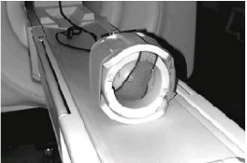
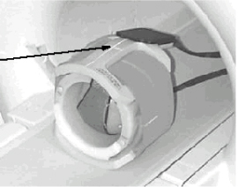
Scan
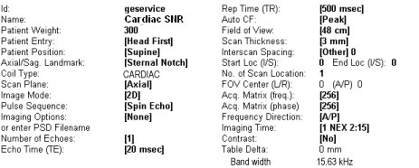
-
Setup Scan Prescription as shown in Figure 7
-
Select [Auto Prescan] to properly calibrate the RF power level for the 90 degree and 180 degree pulses.
-
Select [Scan]. Observe the resulting image of the sphere. SeeFigure 8 (normal image). Ensure that there are no artifacts of any sort in the sphere image. Record the Exam number and Series number for SNR Calculations.
-
Select [Scan] again. This second image of the sphere will be used for determination of Cardiac mode SNR.
-
Select [Cancel]. Refer to Section 3-3 for SNR image analysis.
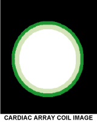
SNR IMAGE ANALYSIS
Description
The SNR Tool retrieves two operator selected images. Signal value is computed as the mean pixel value in a ROI covering 80% of the image. The image is analyzed to determine the center for positioning the ROI. A difference image is created by subtracting the second image from the first and to calculate noise from the subtracted image. Signal value, noise value, and SNR are reported.
SNR Image Analysis Procedure
1. Select [Service Desktop], [Calibration/Checks], then [Image Quality].
2. According to the following illustrations, check SNR.
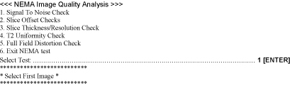
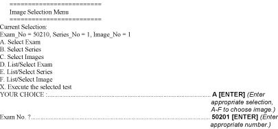
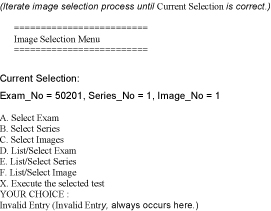
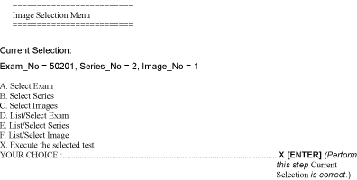
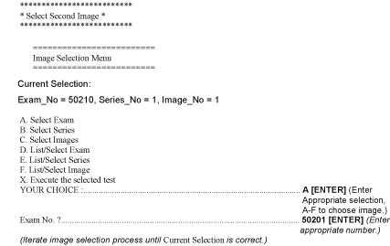
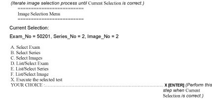
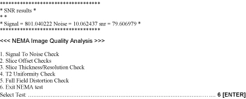
3. Record the date and value calculated in the appropriate column under "SNR Data QA Check" of the Data Table. Refer to Figure 22.
REPLACEMENT AND MAINTENANCE
DISASSEMBLY/REASSEMBLY OF CARDIAC ARRAY
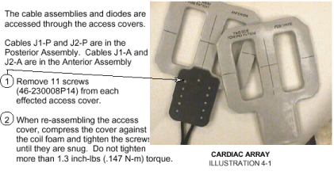
REPLACING THE EXTERNAL CABLE
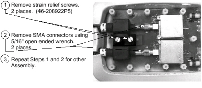
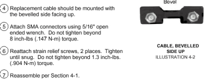
REPLACING THE PIN DIODES
| CAUTION | |
|---|---|
Antenna is tuned at the factory to provide the proper input impedance. Circuit board is not field replaceable. PIN diodes are the only field replaceable components on the circuit board.
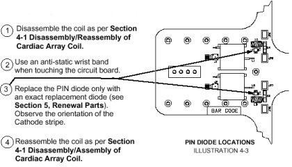
REPLACING THE MECHANICAL HARDWARE
Refer to Section 5, Renewal Parts, for Cardiac Phased Array Coil part numbers. Cable Screws, Hexagonal Standoffs, Access Cover, Access Cover Screws, and Standoff Screws can all be replaced.
See Section 4-1 for the Disassembly/Reassembly of Cardiac Array.
To replace the Hexagonal Standoffs, 46-136375P23, and Standoff Screws, 46-208922P23, carefully pull back foam from around Cardiac Phased Array Input Board to expose the Standoff Screws.
Remove any broken pieces and replace with new components. Tighten until snug. Do not tighten beyond 1.3 inch-lbs. (.147 N-m) torque.
See Section 4-1 for the Disassembly/Reassembly of the Cardiac Array.
CHECKING THE EXTERNAL CABLE
Check the external cables for cracks or breaks once each week. Replace the external cable per Section 4-2, Replacing the External Cable if any damage or wear is found. See Section 5, Renewal Parts, for the cable part number.
CLEANING THE COIL
| CAUTION | |
|---|---|
Clean the Cardiac Array Coil and external cable with a mild dishwashing liquid and water solution. Wet a soft cloth with the solution and proceed to clean.
The Cardiac Array Coil can be cleaned with a 10% bleach solution. Wet a soft cloth with the solution and proceed to clean.
RENEWAL PARTS
| Warning | |
|---|---|
Employees shall follow proper decontamination procedures for clean up of bloodborne pathogens. Refer to Section 4-6, Cleaning The Coil. It is the responsibility of the GEMS employee to insure the part/equipment has been properly decontaminated prior to shipment.
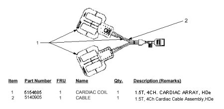
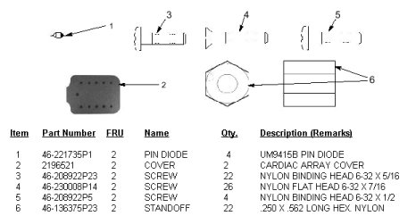
DATA TABLE
Use the space provided below to record the calculated signal to noise ratio (SNR) data. After recording the SNR data obtained during the initial coil installation, record subsequent SNR data in column 2 - 4 below and the date they were obtained in column number 1 as a periodic QA check. If the ratio of any of the coils found is not greater than 85%, then there is a problem in the coil or the MR system.
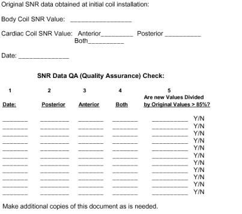